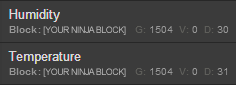

Just what are we making?
This project will walk through the process of building an Arduino based temperature and humidity sensor that essentially emulates the unit that's included in the standard Ninja Blocks kit.
For hardware, we'll be using an inexpensive DHT series temperature and humidity sensor, an RF transmitter module, and of course, an Arduino.
For the software part, we'll need two Arduino libraries, and a simple sketch to read from the sensor and send the readings to the Ninja Block.
The sensor module
You should be able to use any of the DHT series sensors. For this walkthrough, I'll be using a DHT11 temperature and humidity sensor module.

They're very inexpensive but only have 1 degree Celsius precision. This one was about $3 from DX (http://www.dx.com/p/121350). The DHT22 is a little more expensive but it gives you double the precision as well as being able to handle a much wider range for both temperature and humidity.
The RF transmitter module
You'll need a 433 MHz RF transmitter that uses OOK (On/Off Keying) modulation.

Again, they cost very little. This one was about $2 from DX (http://www.dx.com/p/149254).
To get the best range out of the transmitter, you'll also need to add an antenna, but provided it's reasonably close to the Ninja Block, you can do without it while you're prototyping. The antenna should be about 17 cm long. If you're wondering where that figure comes from, the formula is reasonably simple. The exact frequency of these transmitters is 433.92 MHz (433920000 cycles per second) so at (close to) the speed of light (299792458 metres per second) each cycle is:
1 / 433920000 * 299792458 = 0.69 metres or 69 cm
We typically use one quarter of the wavelength which works out to just over 17 cm.
The Arduino
Most Arduinos will work with this project, but the Arduino Nano is really compact so it's what I'll be using in this walkthrough.

If you shop around, you can get Arduino Nanos for under $6 but this one was around $8 from DX (http://www.dx.com/p/81877).
Connecting the hardware
Connecting the modules is a pretty straightforward operation but just pay careful attention to which pins are 5V, Ground and Data. We'll be using Digital Pin 3 for the sensor data and Digital Pin 4 for the transmitter data.
You can organise things how you like, but here's one option if you're using mini breadboards for your Arduino prototyping:
So your final assembly should look something like this:
Arduino software libraries
To make everything work, we'll need to have two Arduino libraries installed for use with the IDE; one to communicate with the sensor and another to package up the sensor data for sending via the transmitter. Here's what we'll be using:
- DHT from https://github.com/markruys/arduino-DHT
- WT450Sender from https://github.com/GraemeWieden/WT450Sender
Download both libraries and place them into your Arduino libraries directory. If you're not sure where your libraries directory is located, it's a subdirectory of your Arduino sketchbook directory which you can find by selecting 'Preferences' from the 'File' menu in the Arduino IDE.
So all the files from Mark Ruys's excellent DHT sensor library must be in a DHT directory and all the files from my WT450Sender library must be in a WT450Sender directory.
Making it work
Now that you have all your hardware sorted out and the libraries installed, you can go ahead and get the Arduino sketch from this project's main GitHub repository located here:
https://github.com/GraemeWieden/temp_hum_sender
Create a temp_hum_sender folder in your sketchbook folder and place the temp_hum_sender.ino file into it.
If you're using the same Arduino pins for your hardware as shown in the prototype diagram above, then you should be able to just plug in the Arduino, open the sketch in the Arduino IDE, select the board type and port and upload the compiled sketch.
If everything is working correctly, you should soon see the new devices appear in the Ninja Blocks dashboard. If you're using the beta dashboard, you should see the following new devices appear in the device list on the left:

The 1504 number indicates the House Code and the Channel, which we have set to 15 and 04 respectively. The House Code can be set from 1 to 15 and the Channel from 1 to 4.
The beta dashboard will also show the combined Temperature/Humidity widget.
The Arduino Sketch
At the top of the sketch, you'll find the code that includes the two libraries:
#include <DHT.h>
#include <WT450Sender.h>By default, the sketch is set to use Digital Pin 3 for the sensor and Digital Pin 4 for the transmitter. You can change these by modifying the following lines:
byte sensorPin = 3; // digital pin for DHT sensor
byte txPin = 4; // digital pin for RF transmitterWe instantiate the sensor and sender objects like this:
DHT sensor; // create the sensor object
WT450Sender sender; // create the sender objectAnd set them up in the setup() function:
sensor.setup(sensorPin);
sender.setup(txPin, houseCode, channelCode);The main loop() function takes care of reading the sensor data every 20 seconds:
delay(20000); // send every 20 seconds
double t = sensor.getTemperature();
double h = sensor.getHumidity();And sends it using the WT450 protocol that the Ninja Block inherently knows how to interpret:
sender.send(h, t); // send the sensor readingsblog comments powered by Disqus